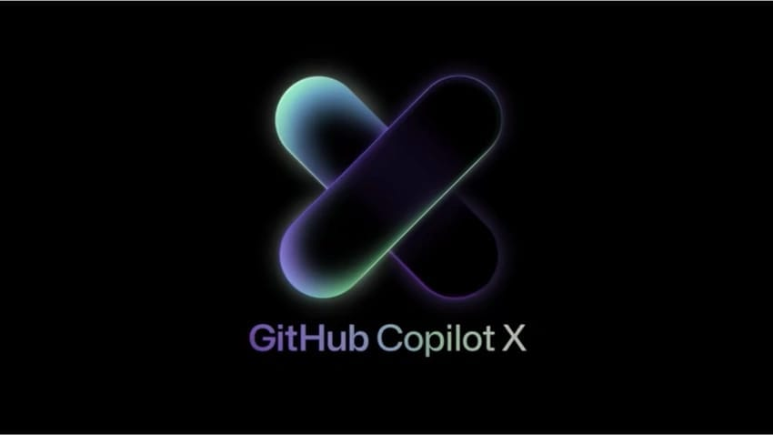

Co-Pilot X: The AI-Powered Developer Experience
Code your way to automation and replace yourself 🔮 GitHub has created a tool called GitHub Copilot that helps developers write code up to 55% faster. It is an AI pair programmer that auto-completes comments and code. We’ll look at the launch of GitHub Copilot X, a new AI development tool made with OpenAI’s Codex model. The tool is designed to enable auto-completion of comments and code, as well as to bring AI-powered assistance to the entire software development lifecycle. It also includes ch
Code your way to automation and replace yourself 🔮
55%GitHub has created a tool called GitHub Copilot that helps developers write code up to 55% fasterGitHub has created a tool called GitHub Copilot that helps developers write code up to 55% faster. It is an AI pair programmer that auto-completes comments and code. We’ll look at the launch of GitHub Copilot X, a new AI development tool made with OpenAI’s Codex model.
AI-PoweredSystems or tools enhanced by artificial intelligence capabilities.In the Lexicon →The tool is designed to enable auto-completion of comments and code, as well as to bring AI-powered assistance to the entire software development lifecycle. It also includes chat and voice capabilities, integration into pull requests, the command line, and documentation. Additionally, it will personalize answers based on a project’s codebase and documentation. This tool has the potential to reduce manual tasks, make complex work easier, and improve developer productivity.
Some say we will no longer need coders in five years! I would posit, much less. So how does AI improve software development? Let me count the ways.
- AI can help developers with code completion, reduce manual tasks, and find bugs and errors faster.
- AI can also create more accurate tests and documentations that are tailored to a specific project or repository.
- AI can even help developers find the most efficient ways to structure their code and provide recommendations for optimizing code performance.
- Furthermore, AI can be used to automate tedious tasks such as creating pull requests or responding to issues.1
These automation capabilities enable developers to focus on the creative aspects of programming, such as developing new features or improving existing ones. AI-powered software development tools make it easier for teams to collaborate on projects by providing real-time feedback on code changes and tracking progress more efficiently. But this, this is something completely different.
Introducing, GitHub Copilot X
4 mIt is made with OpenAI’s Codex model, a descendent of GPT-3, and adopts OpenAI’s new GPT-4 modelGitHub Copilot X is an AI-powered assistant that provides developers with assistance throughout the entire development lifecycle. It is made with OpenAI’s Codex model, a descendent of GPT-3, and adopts OpenAI’s new GPT-4 model. It features AI-powered auto-completion for code, chat and voice for Copilot, and brings Copilot to pull requests, the command line, and docs to answer questions on your projects. It also helps reduce boilerplate and manual tasks and makes complex work easier across the developer lifecycle.
46%By leveraging OpenAI's Codex model, it is now responsible for writing 46% of all codeGitHub Copilot X will help developers be more productive, fulfilled, and happy by providing an AI assistant that is available at every step of the development lifecycle. Copilot X will reduce boilerplate and manual tasks, and make complex work easier to manage. It will auto-complete comments and code, suggest sentences and paragraphs for pull requests, generate tests right from their editor, warn developers if they’re missing sufficient testing, and provide semantic understanding of the entirety of GitHub across public and private knowledge bases to better personalize answers based on a project’s needs. Copilot X will also index resources beyond documentation such as issues, pull requests, discussions, and wikis to give developers everything they need to answer technical questions. Finally, it will harness the reservoir of data and insights that exist in every organization to strengthen the connection between all workers and developers so every idea can go from code to reality without friction.
How is GitHub innovating?

GitHub Copilot automatically completes comments and code to help developers stay in the flow. GitHub is also working on expanding Copilot's features to include pull requests, the command line, and docs to answer questions on projects. Additionally, they are introducing chat and voice for Copilot, as well as making it available for any organization's repositories and internal documentation. They are also exploring ways to index resources beyond documentation such as issues, pull requests, discussions, and wikis to give developers everything they need to answer technical questions. Finally, they are developing GitHub Copilot X which will bring a new generation of more productive, fulfilled, and happy developers who will ship better software for everyone.
The innovation lies in the use AI to make developers more productive and efficient through its GitHub Copilot AI development tool. This tool is powered by OpenAI's Codex model, a descendant of GPT-3. With the help of this tool, developers can get auto-completed comments and code, as well as save up to 55% of coding time. Additionally, GitHub Next is working on evolving GitHub Copilot into a readily accessible AI assistant throughout the entire development lifecycle.

This includes using OpenAI's GPT-4 model and introducing chat and voice options for Copilot, as well as bringing Copilot to pull requests, the command line, and docs to answer questions on projects. Furthermore, GitHub is working on enabling semantic understanding of the entirety of GitHub across public and private knowledge bases to better personalize GitHub Copilot’s answers for organizations, teams, companies, and individual developers alike. Finally, they are exploring the best ways to index resources beyond documentation such as issues, pull requests, discussions, and wikis to give developers everything they need to answer technical questions.
GitHub Copilot has been a major innovation in the world of generative AI. By leveraging OpenAI's Codex model, it is now responsible for writing 46% of all code. This has opened up a new age of software development where AI can be used to auto-complete comments and code, helping developers stay in the flow while coding.
Here are some new features that GitHub Copilot X will add to the developer experience on GitHub:
- GitHub Copilot Chat: Try out the new, ChatGPT-like VS Code and Visual Studio integration. Get detailed analysis and explanations of code, auto-generated unit tests and proposed bug fixes. Join the waitlist now and get access to the included GitHub Copilot Voice, our voice-to-code AI technology extension.
- Copilot for Pull Requests: AI-generated descriptions for pull requests, powered by OpenAI's GPT-4 model. This feature keeps track of work, suggests descriptions, and helps reviewers reason with changes with a code walkthrough. Enable for your repository.
- GitHub Copilot for Docs: Get AI-generated answers to questions on documents related to React, Azure Docs, MDN. and more! Sign up to the waitlist to stay informed.
- Copilot for the Command Line Interface (CLI): Create code using commands and loops, answer queries using complex find flags, and more. Join the waitlist.
Developing Software Can Get Lonely
The benefits of a conversational user interface (CUI) for software development are vast. For example, developers can ask questions about documentation and coding best practices, quickly get answers to complex technical questions, and receive personalized advice tailored to their codebase and documentation.
Additionally, CUIs can help project owners set policies around testing while supporting developers to meet these policies. Furthermore, a conversational interface can help with reducing boilerplate and manual tasks, making complex work easier across the development lifecycle. This allows developers to focus on more creative tasks while the AI assistant takes care of the mundane. Ultimately, this leads to faster development times and improved software quality.
With CUI, developers can ask questions in natural language and receive answers that are tailored to their specific needs. CUI also allows developers to get answers in real-time, without having to search through documentation or wait for an answer from another person.
One of the most popular uses of CUI is GitHub’s Copilot Chat. GitHub Copilot is also being used to automatically warn developers if they're missing sufficient testing for a pull request and then suggest potential tests that can be edited, accepted, or rejected based on a project's needs. This helps ensure that projects have the necessary testing before being released.
GitHub Copilot can integrate its functionality to any organization's repositories and internal documentation - so any developer can ask questions via a ChatGPT-like interface about documentation, idiomatic code, or in-house software in their organization and get instant answers. .
Codex & GPT-3 Are Revolutionizing Development
Codex and GPT-3 can revolutionize software development by combining these two technologies, it has the potential to bring automated solutions to a wide variety of coding tasks, from code completion to bug fixing, testing, and documentation. Now that GPT-4 has been released and integrated, this will help refine some of the learning curves when it comes to a coding environment. With the help of AI-powered auto-completion and natural language processing, developers can save time, effort, and money while producing higher-quality code. As AI technology continues to evolve and become more accessible, the revolution of software development will only continue to grow.

Developer Productivity and Satisfaction
GitHub is improving developer productivity by introducing AI-powered auto-completion, an AI assistant throughout the entire development lifecycle, and GitHub Copilot Chat. With AI available at every step, GitHub is reducing boilerplate and manual tasks and making complex work easier across the developer lifecycle. With GitHub Copilot X, there is a new generation of more productive, fulfilled, and happy developers who will ship better software for everyone.
GitHub Copilot helps developers be more productive, efficient, and happy by auto-completing comments and code, generating tests right from their editor, providing chat and voice support, and answering technical questions across public and private knowledge bases.
The Common Denominator

By leveraging OpenAI's Codex model, a descendent of GPT-3, to create GitHub Copilot X, the world’s first at-scale generative AI development tool, this AI pair programmer auto-completes comments and code to help developers reduce manual tasks, boost productivity, and increase satisfaction. With the release of GPT-4, Copilot X becomes that much better.
GitHub is pioneering the future of AI-powered software development with GitHub Copilot X, a tool that will provide developers with AI assistance at every step of the development lifecycle. It enables developers to focus their creativity on the big picture: building the innovation of tomorrow and accelerating human progress, today.
If you want to brush up on your skills, have a go at the following guide:
 Rizèl Scarlett
Rizèl Scarlett